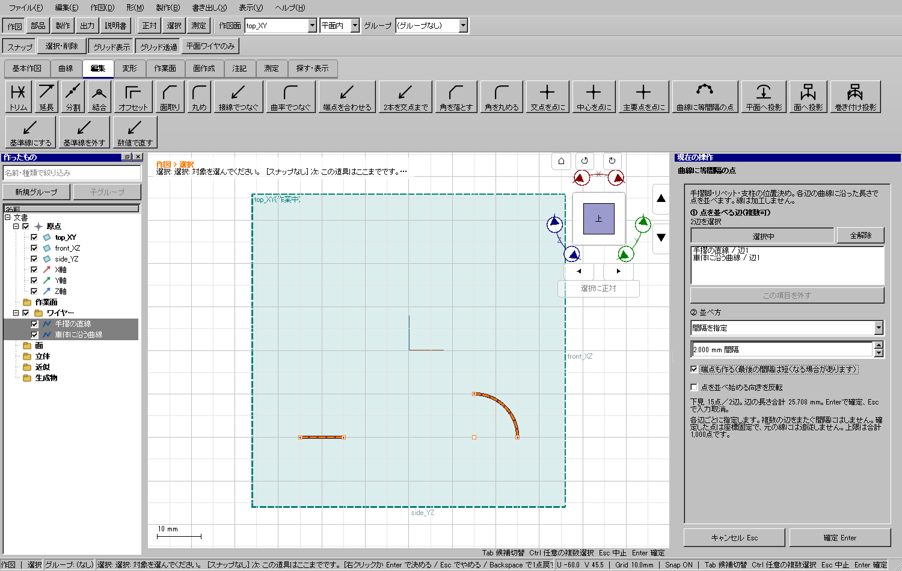

曲がった手摺の脚を2mm間隔で位置決めする
使う機能：曲線に等間隔の点
直線・円・円弧・ベジェ・スプライン上に弧長で等間隔の点を作ります。複数の辺は各辺ごとに計算します。始終点を追加する場合、最後の間隔だけ短くなることがあります。閉曲線では始終点を重ねません。作成点は座標固定で元の曲線には追従しません。
各辺の長さに沿う作図点ができる。元の曲線は変わらず、1回のUndoで全点を戻せる。点は元線に追従しない。
1 準備 — 元の図形から作る
曲がった車体裾に沿う円弧または3D曲線を作る。
まだ用意できていなければ、次の手順を先に行ってください。既にモデルがある場合も、例の座標・大きさ・面の向きを自分のモデルへ読み替えます。
- 指定座標の直線・円・円弧を準備する — 図形の作成から順に練習できます。
- 線・面・部品を取り違えずに選ぶ — 図形の作成から順に練習できます。
練習前にKCD2を別名保存します。数値の長さはmm、角度は度です。平面内のu/vと世界XYZを区別します。
2 使う道具を開く — 押す場所
- 作図 → 編集 → その他 → 曲線に等間隔の点
別の入口：Ctrl+K → 曲線に等間隔の点を検索 → 候補の用途を確認して開きます。別モードなら「全モードから探す」をオンにします。
3 操作手順 — 一つずつ進める
位置決めに使う辺を用意する
作図面上の直線・円弧、または3Dのベジェ・スプラインを用意します。下の実例では10mmの直線と半径10mm・90度の円弧を使います。
画面で確認：点は曲線の実長に沿って並びます。作図面へ平らに潰す機能ではありません。
ツールを開く
「作図→編集→曲線に等間隔の点」を押します。Ctrl+Kで名前を検索して開くこともできます。
画面で確認：右に①対象、②並べ方、下見点数と確定ボタンが出ます。
複数の対象を選ぶ
①の選択中に3Dで辺を続けてクリックします。左ペインではCtrlでワイヤーを追加できます。
画面で確認：3Dで押した辺は辺ごと、左一覧で選んだワイヤーは全体として一覧に入ります。同じ対象を押し直すと外れます。
間違った対象だけ外す
①の一覧の行を選び「この項目を外す」を押します。全部選び直す場合は全解除を押します。
画面で確認：対象の登録だけを外します。元のワイヤーは削除しません。
並べ方を指定する
間隔なら2mm、等分数なら8などを入力します。「端点も作る」と「向きを反転」を必要に応じて選びます。
画面で確認：最後の間隔だけ短くなる場合があります。8等分なら開いた辺は端点込み9点、閉じた円は重複なし8点です。
下見を確認する
強調された辺の上の小さな印と、下見の点数を確認します。数値欄で最初のEnterは新しい値を適用します。
画面で確認：実例は直線6点と円弧9点の計15点です。合計1000点を超える条件は確定できず、間隔や対象の修正を案内します。
確定して使う
下端の確定Enterを押します。数値適用後のもう一度のEnterでも確定できます。
画面で確認：作図点が左ペインに増えます。次の線の始点や配置の基準に使えます。点は座標固定で元線の変更には追従しません。
取消と保存を確認する
確定前はEscか取消で入力を外します。確定後はCtrl+Zで全点をまとめて戻し、Ctrl+Yでやり直します。
画面で確認：KCD2に保存して開き直すと点の座標とグループ所属が残ります。各辺をまたぐ連続配列や部品の自動複製はこのツールの範囲外です。
4 設定する欄と数値
ボタン名・欄名と、今回使う値を対応させてください。項目が出ていない場合は作り方・モードが合っているか確認し、ペイン内をスクロールします。
| 見る欄・役割 | この例の設定と意味 |
|---|---|
| ①対象 | 3Dで辺を続けてクリック、押し直すと解除 |
| 左ペイン | Ctrlでワイヤーを複数追加 |
| 間隔 | 2mmなど |
| 等分数 | 8なら開いた辺は端点込み9点、閉じた円は8点 |
| 向き反転 | 元の終点側から並べる |
| 確定 | 下見の点数を確認してEnter |
選択の確認：役割欄の名前と3Dの強調を照合します。重なって拾いにくい時はTabで候補を替えます。全体を使う例では左一覧の要素名を選び、3Dの1辺選択と区別します。

この実画面は既存操作試験の一場面で、下の数値例の完成画像とは限りません。設定・選択の操作画面。具体的な完成例は段階写真のある作業例を参照してください。
5 確定して結果を確認
必要な入力と数値をそろえ、下見と状態欄を確認して、右ペインの作成・適用・確定ボタンを押します。Enter対応の道具はEnterでも確定できます。
各辺の長さに沿う作図点ができる。元の曲線は変わらず、1回のUndoで全点を戻せる。点は元線に追従しない。
形を作る操作では、元と結果の名前を分けて一覧で確認し、必要に応じて元を一時非表示にします。表示だけの機能では形状や要素数を変えることが目的ではありません。
実例の準備から完成まで
以下は具体的な別のモデルで記録した実画面です。表示された数値と、上の練習課題の数値は区別してください。


6 取消・やり直し・保存
Escで未確定の入力を取り消します。道具を終えるには選択（V）か別の道具へ切り替えます。確定済みの図面変更はCtrl+Z、やり直しはCtrl+Yです。
モデルの編集正本はKCD2、説明書の編集正本はKCIです。外部へ出力するだけの機能では、出力ファイルと編集元を両方残してください。
進めない場合 — 症状から戻る場所を探す
| 起きていること | 確認して直す場所 |
|---|---|
| 点が多すぎる | 間隔を大きくするか等分数・対象を減らす。上限は合計1000点 |
| 端点がない | 端点も作るをオン |
| 辺の継ぎ目で間隔が変わる | 各辺ごとの機能。連続した1本の曲線を選ぶ |
| 取消 | Escまたは下端の取消。確定済みはCtrl+Z |
この機能の入力条件：辺を複数選び、間隔mmか等分数を指定して曲線に沿って点を作ります。座標固定の点で、元の線は変えません。
計算中は処理表示を見ます。失敗が出たら、対象・入力条件を変えずに何度も押すのでなく、案内にある対象と条件を確認します。
参考画面の出典と確認範囲
試験名：HP-CURVEPOINTS multiple edges preview commit history save and next tool。試験全体の結果：passed。画像はコマンド呼出し直後で、入力待ち・下見の場合もあります。各段階の完成証拠ではありません。